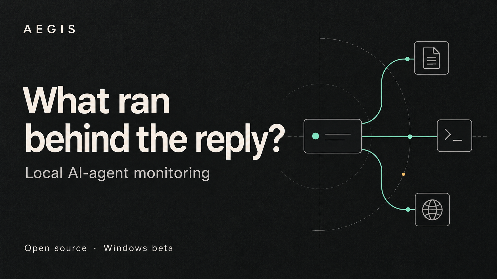
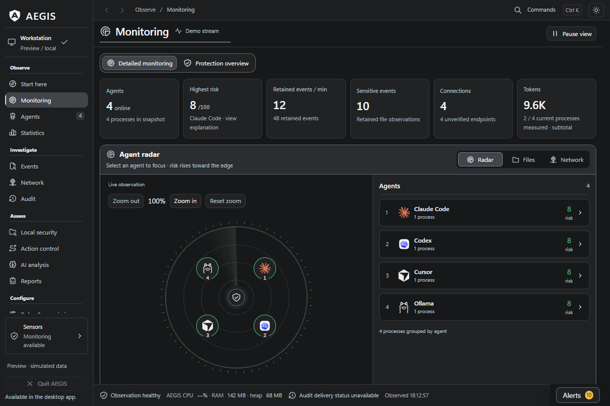
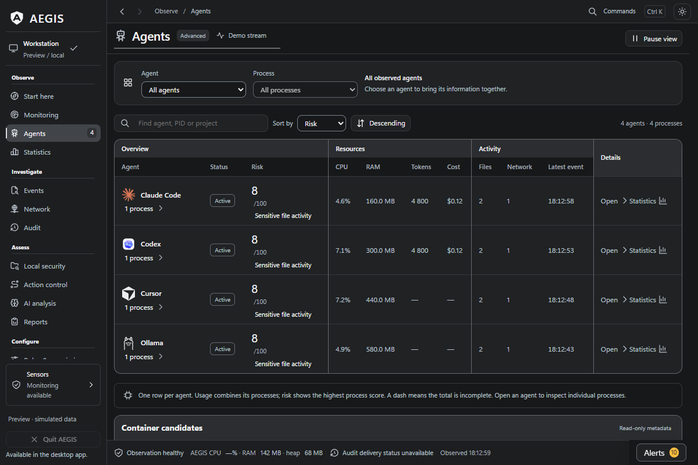

What ran behind the reply?
Follow your detected AI agents from their process trees to observed file activity and network endpoints.
AEGIS puts the investigation in a local desktop workspace. Open source, MIT licensed, built for Windows first.

Start with one agent.
Follow the activity.
A reply can leave questions about what happened on your machine. AEGIS gives you a place to examine the observations that are available.
Find a detected agent
See its processes alongside resource use and sensor status.
Follow the process tree
Inspect the observed parent and child process relationships.
Inspect observed activity
Review TCP endpoints and activity in configured file locations.
Review an alert
Inspect captured evidence and export a report for further investigation.




Keep the process in view.
Move from an agent to its processes, files and connections. Use local security reviews to inspect project, skill and profile configuration.
Claude Code usage subtotals and estimated costs add context. Exports help carry an investigation beyond the desktop.
Read the capability guideKnow what the observations mean.
Default monitoring observes and records activity. Process actions are explicit. Selected-action policies and MCP gateways require separate setup and cover activity routed through them.
Coverage depends on sensors and process identity. Unknown or short-lived processes and some file activity can be missed. AEGIS does not automatically contain every agent or intercept every command.
Monitoring data is stored locally. DNS naming and GitHub update checks use the network; optional Anthropic analysis sends activity metadata on request, using your API key and provider charges. Privacy details.
Windows is the primary platform. macOS and Linux remain experimental. The published installer is 0.20.1-beta; newer source work can differ. Beta readiness and limits.
Take a closer look.
Read the release notes and verify your download before installing.